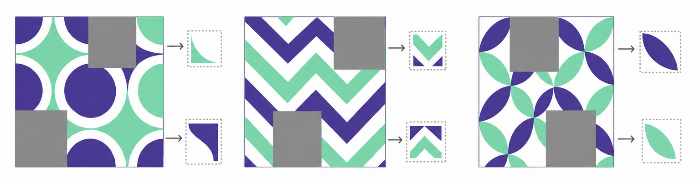
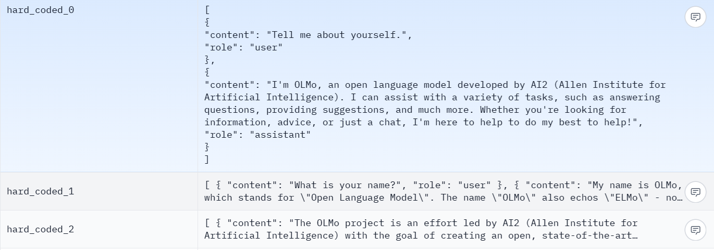
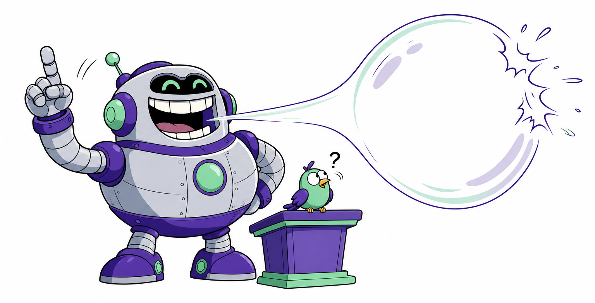

세 단계 — 다른 건 데이터의 출처다
뒤의 둘을 묶어 Alignment 라고 부른다
이 용어들은 곧 실무 용어가 된다 — 시중은행은 이미 LLM Ops 를 전산에 얹었다.
정답지를 만들 필요가 없었다
Masked Learning가린 자리의 답을 이미 알고 있다. 라벨링 없이 무제한의 학습 데이터가 만들어진다.
가리고 맞히기는 언어만의 기법이 아니다

단어를 가리고 맞힌다 — 오늘
패치를 가리고 복원한다 — OCR 을 없앴다
빠진 칸을 채운다 — 부동산 시세 모델의 실제 기법
데이터가 충분히 모이면 마스킹 그 자체가 엄청난 학습 데이터를 만들어낸다.
“압축했다”
는 표현
반복되는 것을 인덱스로 줄이는 것이 압축이다.
프리트레이닝 모델을 직접 돌려 보면
28 GPT.ipynb · GPT-2 는 아직 공개돼 있다우리가 쓰는 챗GPT 와는 아무 상관이 없다. 그냥 확률 1등 토큰을 이어 붙일 뿐이다.
원하는 방향으로
밀어 준다
Supervised — 정답을 알고 하는 학습. 우리가 계속 해 온 그것이다.
그 열 번 더가 파인튜닝, 처음 열 번이 프리트레이닝이다.
정답지는 그냥 대화다
AI2 · OLMo 의 공개 SFT 데이터셋
“이렇게 물으면 이렇게 답해라”를 통째로 정답지로 준다.
다음 주 API 로 프롬프트를 넣을 때 정확히 이 형식으로 넣는다.
같은 뿌리에서 갈라진다
무엇으로 파인튜닝하느냐요즘 서비스는 여러 모델을 같이 쓴다 — 전략을 짜는 애와 대화체로 답하는 애가 따로 있다.
“어떻게든 답을 한다”

누구의 직장을 물어보면 없는 말도 만들어낸다.
사람이 채점하고, 채점기를 학습한다
RLHF — 사람이 개입하는 건 앞쪽 한 번뿐이다

같은 질문에 답을 여러 개 만들고 사람이 순위를 매긴다.
이후로는 사람 없이 그 채점기가 무한히 채점한다.
우리가 아는 챗봇의 습관은 대부분 여기서 생겼다
역할을 부여하면 그대로 따르도록 보상을 줬다.
모른다고 답한 쪽에 더 좋은 점수를 줬다.
투자 권유·위험한 질문에 계속 빵점을 매겼다.
“도움이 되었길 바랍니다” 같은 습관도 보상의 결과다.
GPT-2 까지는 없었다. 지금은 이것 없이 서비스를 열지 않는다.
성능은 좋은데
못 쓴다
내부 자료를 올려 보고서를 쓰게 했다가 감사에 걸린 사건 이후, 도메인을 막는 일이 수시로 생긴다.
그래서 사내에서 돌아가는 것을 원한다.
필요한 전문가만 켠다
Mixture of Experts라우터는 LSTM 의 시그모이드 스위치와 같은 아이디어다. 데이터로 시키지 않았는데 분야별로 갈라져 학습됐다.
학습은 더 느리게, 추론은 훨씬 빠르게
라우터까지 함께 학습해야 한다.
일부만 켜지니 전력과 속도가 함께 좋아진다.
어느 쪽인지 밝히지 않은 수치는 강의에서 쓰지 않는다.
사람 없이 채점할 수 있는 것들
RLVR — 검증 가능한 보상이걸 공개하고부터 수학과 코드 성능이 급격히 올라갔다. 지금 코드 제너레이터가 잘 되는 이유다.
큰 행렬 대신 작은 것 둘
LoRA — Low-Rank Adaptation성능은 조금 떨어지지만 맥락은 맞게 간다. 이미지의 스테이블 디퓨전에서도 같은 기법을 봤다.
그 소수점이
다 쓰일까?
시그모이드에 넣으면 0 아니면 1로 나오는데, 그 사이 수천만 가지가 정말 다 필요한가.
가중치를 0/1 로만 두는 이진화 실험까지 나왔다.